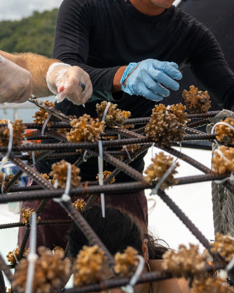
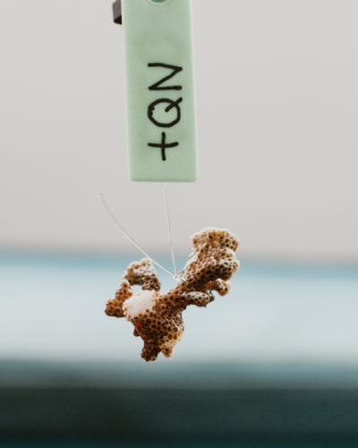
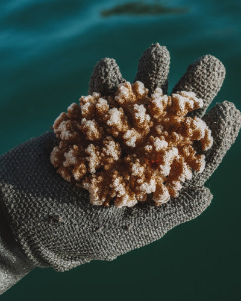
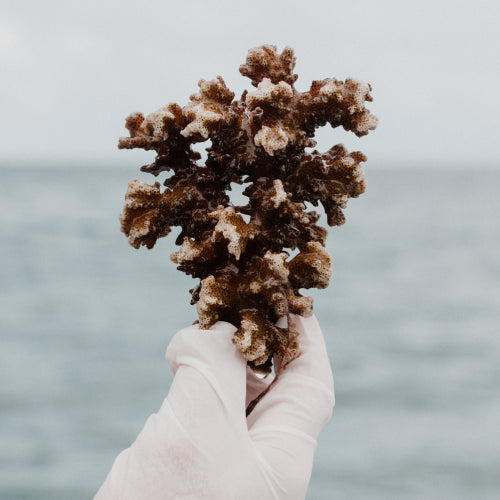
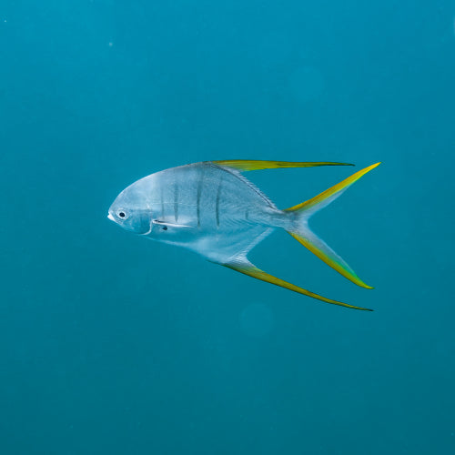
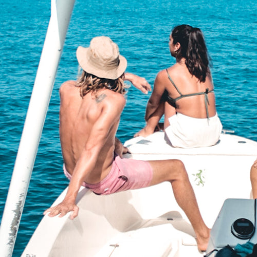

Árboles, tendederos y arañas suspendidas a 5 metros bajo el agua protegen y aceleran el crecimiento coralino de manera extraordinaria.
Los corales cultivados crecen hasta 10-12 cm al año, frente a apenas 2.5 cm en condiciones naturales, multiplicando por cuatro su velocidad de desarrollo.
El proceso culmina con la reproducción natural del coral, donde cada año se multiplica de manera exponencial el nuevo coral que crece en la zona de manera natural.
Estructuras de jardinería de corales suspendidas estratégicamente en el agua cristalina de Isla Tortuga, donde fragmentos crecen vigorosamente bajo la protección de innovadoras técnicas de cultivo marino.
Cada estructura funciona como una incubadora natural, permitiendo que los fragmentos se desarrollen libres de depredadores y sedimentos, acelerando dramáticamente su recuperación.

Incremento del volumen de coral trasplantado a 9.745 cm³, una señal inequívoca de recuperación significativa del ecosistema marino.

Restauración de hábitats esenciales para peces y otras especies marinas, reconstruyendo la cadena alimentaria submarina.

Impulso al turismo responsable en Isla Tortuga, generando oportunidades de desarrollo sostenible para las comunidades locales costeras.
Isla Tortugas
La restauración coralina es absolutamente clave para proteger “Los Bosques Tropicales del Océano” y toda la vida marina que depende vitalmente de estos ecosistemas complejos e irremplazables.
Este proyecto ejemplar demuestra que la ciencia rigurosa, la comunidad comprometida y la cultura consciente pueden unirse armoniosamente para revertir daños ambientales y construir un futuro sostenible.
Invitamos a todos a ser parte activa de esta inspiradora historia de recuperación y a cuidar con dedicación el tesoro natural que es Isla Tortuga.